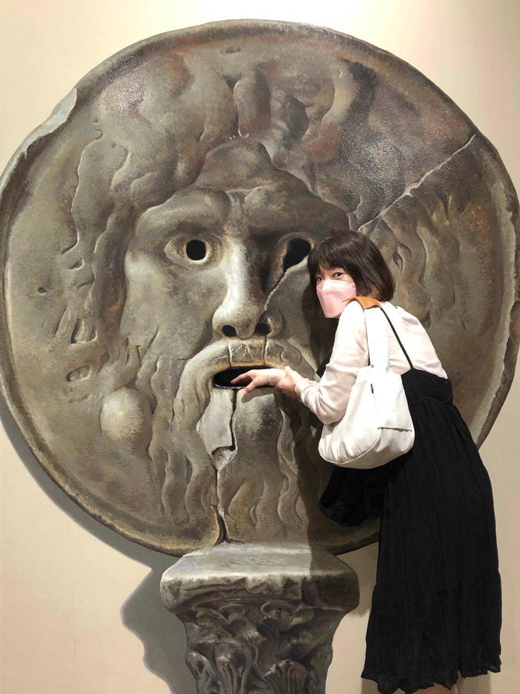

サロン紹介
くくふぁ～巡～ は、古代道教に伝わる内臓デトックス療法「チネイザン」と、 植物の恵みを活かした「アロマトリートメント」を提供する、完全予約制・女性専用のプライベートサロンです。
忙しい毎日の中で知らず知らずのうちに溜め込んだ心身の緊張や疲れを、 深い呼吸とやさしいタッチでゆるめ、本来の健やかな巡りへと導きます。
お腹から心と身体を整えるチネイザン、植物の香りに包まれるアロマトリートメントを通して、 心身のバランスを整え、本来のご自身らしさと健康を取り戻すお手伝いをいたします。
誰の目も気にせず、ただ自分自身と向き合う時間。
小さな隠れ家のような空間で、ほっと力を抜き、心も身体も軽やかになるひとときをお過ごしください。
施術メニュー


セラピスト

かおり
私自身、つい予定を詰め込みすぎてしまうタイプでした。
そんな自分の状態に気づかせてくれたのが、チネイザンです。
チネイザンのマスターコース修了後、肩こりが軽くなり、姿勢が自然と整い、驚いたことにほうれい線まで薄くなりました。
一方で、それまで無理を重ねていた反動なのか、学びの過程で発熱することもありました。身体が溜め込んでいたものを手放していく中で、心も身体もすっきりと軽くなっていったのを今でも覚えています。
お腹をほぐすことで、身体だけでなく心まで軽くなる。その感動を多くの方にお伝えしたいという思いから、施術を続けています。
「お腹は感情のゴミ箱」とも言われるほど、内臓は日々のストレスや感情の揺らぎを受け止めています。
忙しい毎日から少し離れ、ご自身のためだけの時間を過ごしてみませんか。
身体の不調だけでなく、心までふっと軽くなるような施術を心がけています。
どうぞ安心して、ゆっくりとご自身を甘やかす時間をお過ごしください。
【保有資格】
- 内臓マッサージ協会 チネイザン認定セラピスト
- AEAJ認定 アロマテラピーアドバイザー
- リメディアルマッサージ Certificate取得
- RYT200修了
- Meddy認定 ブレスワーク指導者養成講座修了
よくあるご質問
Q. チネイザンとはどのような施術ですか？
A. チネイザンは、お腹へのやさしいタッチを中心に行うホリスティックな腹部トリートメントです。 タイに伝わる内臓デトックスセラピーで、「氣内臓デトックス」とも呼ばれています。
内臓に直接働きかけることで、お腹の滞りを整えるだけでなく、 感情のバランスにもアプローチし、本来の生命力や自然治癒力を高めることを目的としています。
Q. アロマトリートメントとチネイザンの違いは何ですか？
A. アロマトリートメントは、全身の緊張をゆるめ、リンパの流れを促しながら心身をリラックスへ導く施術です。
一方、チネイザンはお腹（内臓）へのアプローチを中心とし、 身体だけでなく感情の解放や心身のバランスを整えることに特化した施術です。
Q. 施術を受けられない場合はありますか？
A.妊娠中の方、現在重い病気で治療中の方、腹部内の臓器に炎症がある方、 お腹の手術後半年以内の方は施術をお受けいただけません。
ご不安な場合は事前にご相談ください。
Q. 生理中や妊娠中でも施術は受けられますか？
A. 妊娠中の方につきましては、安全面を考慮し、すべてのメニューの施術をお断りしております。
生理中はお腹をあまり刺激しない方がよいとされているため、チネイザンはお控えください。
Q. 施術後はどのような変化がありますか？
A.・お腹がすっきり軽く感じる
・睡眠の質が向上する
・お通じがスムーズになる
・呼吸が深くなる
・身体の緊張がゆるむ
Q. 支払い方法は何がありますか？
A. 現在は現金のみのお取り扱いとなります。
アクセス
横須賀中央駅 徒歩3分
施術は落ち着いたマンションの一室で行っております。
詳細住所はご予約確定後にご案内いたします。
※専用駐車場はございません。近隣のコインパーキングをご利用ください。